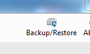
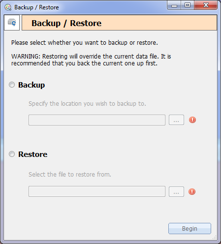

Backup and Restore is available from the main form by clicking this icon

Once this is loaded you will have the option to choose to backup the existing data, or to restore and override from an existing backup.
Note: Cura backup files end with the extension .crbk

Backup
To backup the current data, select the backup option and select a location and file name to back up to. Now click Begin.
Restore
To restore, navigate and find the file to restore from. Now click Begin.
Note: Restoring from an earlier backup will unload the current data and load the data from the backup file. It is recommended backing up the current data before hand.